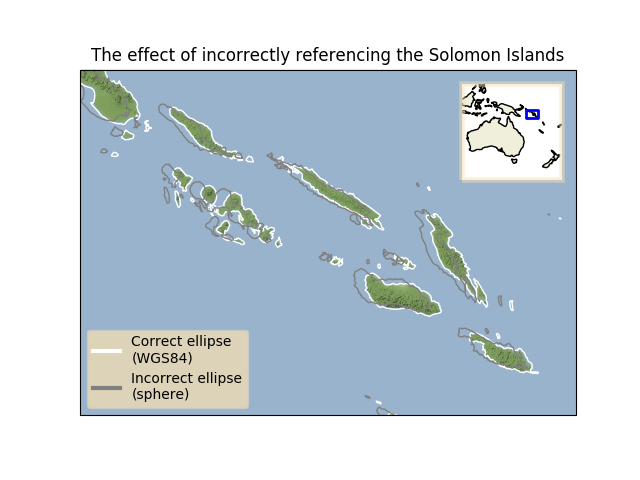

Note
Click here to download the full example code
The effect of badly referencing an ellipse¶
This example demonstrates the effect of referencing your data to an incorrect ellipse.
First we define two coordinate systems - one using the World Geodetic System established in 1984 and the other using a spherical globe. Next we extract data from the Natural Earth land dataset and convert the Geodetic coordinates (referenced in WGS84) into the respective coordinate systems that we have defined. Finally, we plot these datasets onto a map assuming that they are both referenced to the WGS84 ellipse and compare how the coastlines are shifted as a result of referencing the incorrect ellipse.
import cartopy.crs as ccrs
import cartopy.feature as cfeature
from cartopy.io.img_tiles import Stamen
import matplotlib.pyplot as plt
from matplotlib.lines import Line2D as Line
from matplotlib.patheffects import Stroke
import numpy as np
import shapely.geometry as sgeom
from shapely.ops import transform as geom_transform
def transform_fn_factory(target_crs, source_crs):
"""
Return a function which can be used by ``shapely.op.transform``
to transform the coordinate points of a geometry.
The function explicitly *does not* do any interpolation or clever
transformation of the coordinate points, so there is no guarantee
that the resulting geometry would make any sense.
"""
def transform_fn(x, y, z=None):
new_coords = target_crs.transform_points(source_crs,
np.asanyarray(x),
np.asanyarray(y))
return new_coords[:, 0], new_coords[:, 1], new_coords[:, 2]
return transform_fn
def main():
# Define the two coordinate systems with different ellipses.
wgs84 = ccrs.PlateCarree(globe=ccrs.Globe(datum='WGS84',
ellipse='WGS84'))
sphere = ccrs.PlateCarree(globe=ccrs.Globe(datum='WGS84',
ellipse='sphere'))
# Define the coordinate system of the data we have from Natural Earth and
# acquire the 1:10m physical coastline shapefile.
geodetic = ccrs.Geodetic(globe=ccrs.Globe(datum='WGS84'))
dataset = cfeature.NaturalEarthFeature(category='physical',
name='coastline',
scale='10m')
# Create a Stamen map tiler instance, and use its CRS for the GeoAxes.
tiler = Stamen('terrain-background')
fig = plt.figure()
ax = fig.add_subplot(1, 1, 1, projection=tiler.crs)
ax.set_title('The effect of incorrectly referencing the Solomon Islands')
# Pick the area of interest. In our case, roughly the Solomon Islands, and
# get hold of the coastlines for that area.
extent = [155, 163, -11.5, -6]
ax.set_extent(extent, geodetic)
geoms = list(dataset.intersecting_geometries(extent))
# Add the Stamen aerial imagery at zoom level 7.
ax.add_image(tiler, 7)
# Transform the geodetic coordinates of the coastlines into the two
# projections of differing ellipses.
wgs84_geoms = [geom_transform(transform_fn_factory(wgs84, geodetic),
geom) for geom in geoms]
sphere_geoms = [geom_transform(transform_fn_factory(sphere, geodetic),
geom) for geom in geoms]
# Using these differently referenced geometries, assume that they are
# both referenced to WGS84.
ax.add_geometries(wgs84_geoms, wgs84, edgecolor='white', facecolor='none')
ax.add_geometries(sphere_geoms, wgs84, edgecolor='gray', facecolor='none')
# Create a legend for the coastlines.
legend_artists = [Line([0], [0], color=color, linewidth=3)
for color in ('white', 'gray')]
legend_texts = ['Correct ellipse\n(WGS84)', 'Incorrect ellipse\n(sphere)']
legend = ax.legend(legend_artists, legend_texts, fancybox=True,
loc='lower left', framealpha=0.75)
legend.legendPatch.set_facecolor('wheat')
# Create an inset GeoAxes showing the location of the Solomon Islands.
sub_ax = fig.add_axes([0.7, 0.625, 0.2, 0.2],
projection=ccrs.PlateCarree())
sub_ax.set_extent([110, 180, -50, 10], geodetic)
# Make a nice border around the inset axes.
effect = Stroke(linewidth=4, foreground='wheat', alpha=0.5)
sub_ax.spines['geo'].set_path_effects([effect])
# Add the land, coastlines and the extent of the Solomon Islands.
sub_ax.add_feature(cfeature.LAND)
sub_ax.coastlines()
extent_box = sgeom.box(extent[0], extent[2], extent[1], extent[3])
sub_ax.add_geometries([extent_box], ccrs.PlateCarree(), facecolor='none',
edgecolor='blue', linewidth=2)
plt.show()
if __name__ == '__main__':
main()
Total running time of the script: ( 0 minutes 0.318 seconds)